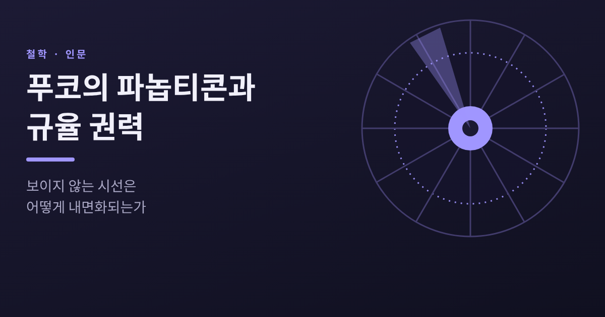
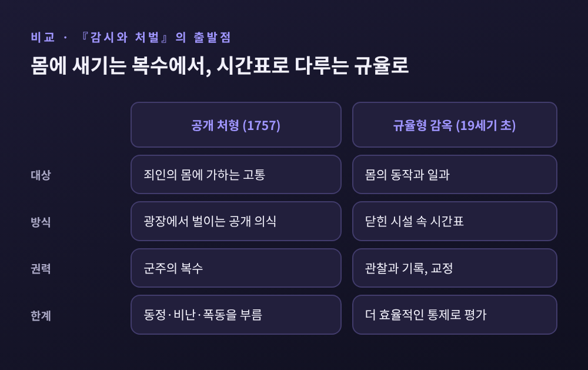
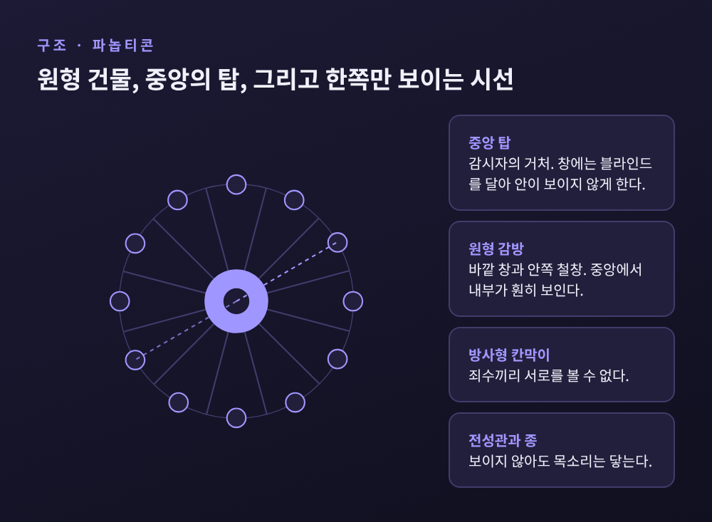
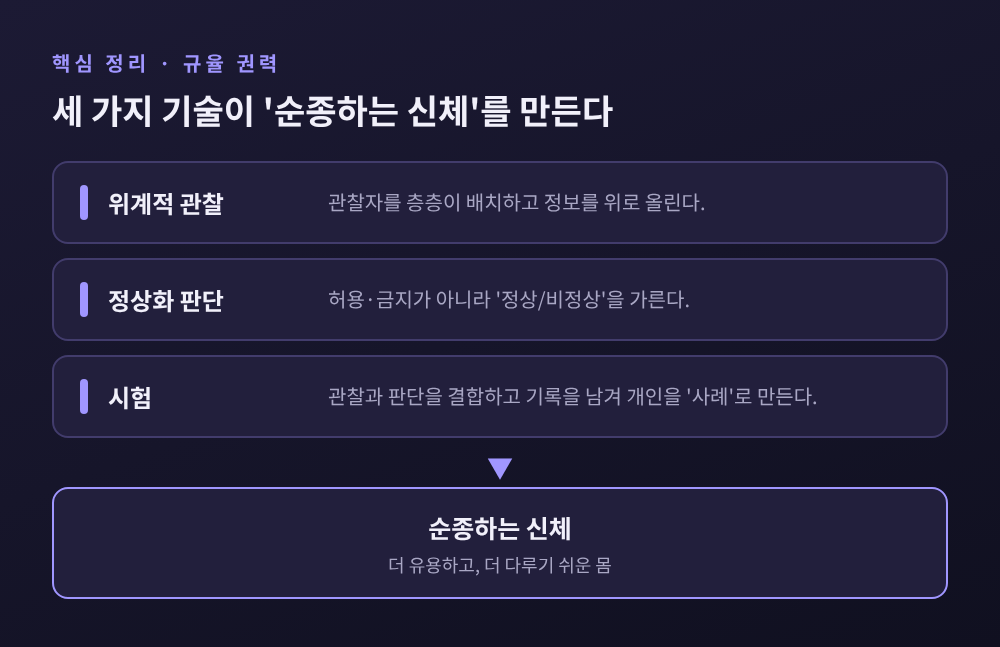
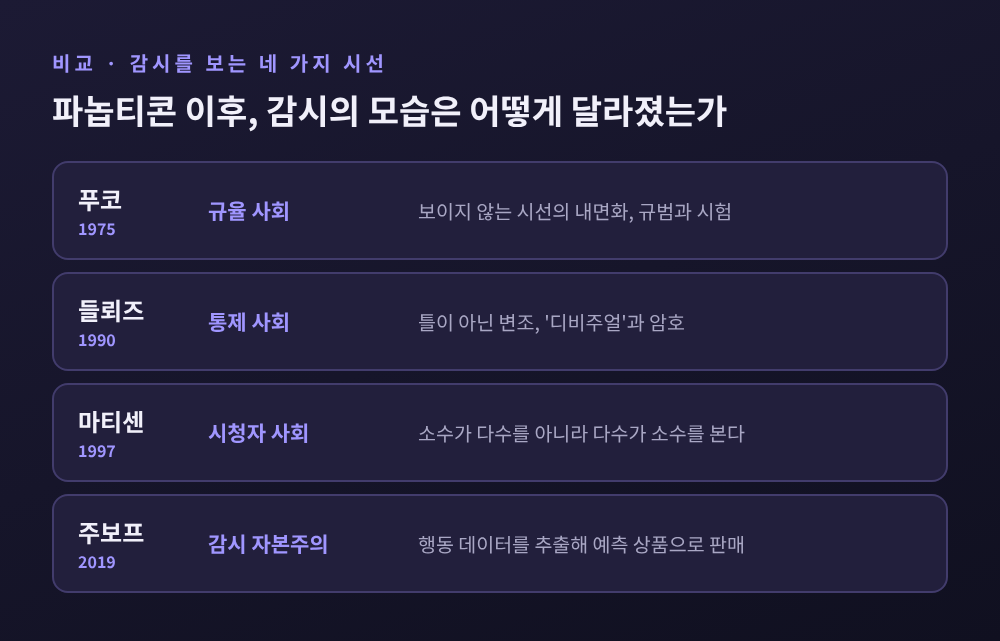

오늘은 푸코의 파놉티콘과 규율 권력에 대해 이야기해 보려 합니다.
벤담이 설계한 원형 감옥이 어떻게 '보이지 않는 시선을 내면화시키는 권력 모델'이 되었는지 정리해 보겠습니다.
결론부터 말씀드리면, 권력이 가장 효율적으로 작동하는 순간은 실제로 감시할 때가 아니라 감시받을 수 있다고 믿게 만들 때입니다.
『감시와 처벌』은 1975년 프랑스에서 출간되었습니다. 원제는 『Surveiller et punir: Naissance de la prison』, 영역본은 1977년에 나왔습니다.
책은 잔혹한 장면 하나로 시작합니다.
1757년 1월 5일, 로베르-프랑수아 다미앵이 베르사유에서 루이 15세를 칼로 찔렀습니다. 국왕 시해 미수였습니다.
같은 해 3월 28일 파리 그레브 광장에서 형이 집행되었습니다. 달군 집게로 네 시간 동안 살을 뜯고, 녹인 밀랍과 납, 끓는 기름을 상처에 붓고, 마지막에는 말에 묶어 사지를 찢는 형벌이었습니다.
푸코는 이 장면 곁에 19세기 초 감옥의 일과표를 나란히 놓습니다. 규칙적으로 짜인 일과표입니다.
예전엔 군주가 죄인의 몸에 복수를 새겼습니다. 지금은 규칙이 몸의 움직임을 다룹니다.
흥미로운 것은 푸코가 이 변화를 단순한 인도주의의 승리로 읽지 않는다는 점입니다.
공개 처형은 죄인에 대한 동정을 낳고, 집행인에 대한 비난을 부르고, 때로는 폭동으로 번졌습니다. 개혁가들이 걱정한 것은 국가 폭력이 불균등하고 예측하기 어렵다는 사실이었다는 것이 푸코의 해석입니다.
스탠퍼드 철학백과가 인용하는 문장이 이 입장을 압축합니다. "덜 처벌하기 위해서가 아니라, 더 잘 처벌하기 위해"였다는 것입니다.

파놉티콘은 제러미 벤담이 1787년 러시아의 크리체프(Crecheff)에서 쓴 편지들에서 구체화되었습니다. 편지는 1791년에 『파놉티콘, 혹은 감시 가옥』으로 책이 되었습니다.
발상의 출발은 동생 새뮤얼 벤담이었습니다. 새뮤얼은 포툠킨 밑에서 일하며 노동자를 한곳에서 지켜보는 '중앙 감시 원리'를 떠올렸고, 형 제러미가 이를 감옥으로 옮겨 왔습니다.
설계는 단순합니다. 벤담의 편지 II는 이렇게 시작합니다. "건물은 원형이다."
바깥 둘레에 감방이 늘어서고, 한가운데에 감시자의 거처가 놓입니다. 감방마다 바깥쪽 창과 안쪽 철창이 있어 중앙에서 내부가 훤히 보입니다. 감방 사이는 방사형 칸막이로 막아 죄수끼리는 서로를 볼 수 없습니다.
중앙 탑의 창에는 블라인드를 달아, 죄수의 눈높이에서는 안쪽이 보이지 않게 합니다.
핵심은 벤담이 직접 쓴 두 구절에 있습니다.
편지 V는 이 구상의 본질을 "감시자 위치의 중심성"과 "보이지 않으면서 보는 방법"이라고 적었습니다. 편지 VI는 감시자의 "명백한 편재"와 "실제 현전의 극도의 용이성"을 함께 말합니다.
탑에 사람이 있는지 없는지는 죄수가 알 수 없습니다. 그래서 감시자 한 사람이 늘 곁에 있는 것과 같은 효과가 납니다. 벤담은 이렇게 감시의 수고는 줄고 엄격함은 오히려 늘어난다고 설명했습니다.
벤담의 관심은 감옥에만 머물지 않았습니다. 편지 I에서 그는 이 원리가 공장, 정신병원, 병원, 학교 등 "모든 시설"에 쓰일 수 있다고 말합니다.
운영 방식도 구체적이었습니다. 편지 IX에서는 "전체를 계약으로" 운영하겠다고, 곧 민간 위탁으로 돌리겠다고 밝혔습니다.
아이러니하게도 벤담의 도면 그대로 지어진 건물은 거의 없습니다. 런던 밀뱅크 감옥은 1812년 정부 자금으로 계획되어 1821년 문을 열었지만, 질병이 번지며 평판이 나빴고 벤담 자신도 정부의 방식을 지지하지 않았습니다.
쿠바의 프레시디오 모델로(1926~1931년 건설)는 감방 93개짜리 원형 건물 네 동으로 지어졌습니다. 문이 없는 감방에 훗날 6,000명이 갇혔다고 합니다.

푸코는 『감시와 처벌』의 「파놉티시즘」 장을 흑사병 이야기로 엽니다.
17세기 말의 포고령에 따르면, 도시에 페스트가 퍼지면 구역을 나누고 모든 주민에게 집에 머물라는 명령이 내려집니다. 어기면 사형입니다. 거리마다 감독관(syndic)이 있어 매일 주민을 창가로 불러내 이름을 부르며 확인합니다. 푸코는 이를 "산 자와 죽은 자의 대검열"이라 부릅니다.
모든 사망과 질병은 영구적인 기록 체계에 적혀 위로 올라갑니다.
여기까지가 첫 번째 이미지, 곧 위기 속에서 사회 가장자리를 틀어막는 '규율의 봉쇄'입니다.
파놉티콘은 두 번째 이미지입니다. 평상시에도 권력을 효율적으로 돌리는 '규율의 메커니즘'입니다.
푸코가 파놉티콘에서 건진 문장은 세 가지로 요약됩니다.
첫째, "가시성은 덫이다."
어둠보다 환한 조명과 감독자의 눈이 더 잘 포획한다고 푸코는 말합니다.
둘째, 파놉티콘의 목적은 수감자에게 "의식적이고 영속적인 가시성의 상태"를 유도해 권력의 "자동적 기능"을 보장하는 것입니다.
감시자가 실제로 있느냐는 중요하지 않습니다. 스탠퍼드 철학백과의 설명대로, 통제는 실제 감독보다 관찰의 '가능성'에서 나옵니다.
셋째, 권력을 의식하는 자는 "자기 자신의 복종의 원리"가 됩니다.
감시자는 필요 없어지고, 감시받는 사람이 감시자의 역할까지 떠맡습니다. 보이지 않는 시선이 내면화되는 순간입니다.
푸코는 파놉티콘을 "권력의 실험실"이라 불렀고, 특정한 건물에서 떼어 낼 수 있는 "정치 기술의 형상"이라 규정했습니다.
그래서 이 이야기의 주인공은 벽돌이 아니라 배치입니다. 한쪽은 보이고 한쪽은 보이지 않는 비대칭 구도만 갖추면, 학교든 병원이든 공장이든 같은 원리가 작동합니다.
파놉티콘이 규율 권력의 '건축'이라면, 그 안에서 실제로 움직이는 도구는 세 가지입니다. 스탠퍼드 철학백과는 이를 위계적 관찰, 정상화 판단, 시험으로 정리합니다.
위계적 관찰은 시선의 구조입니다. 한 사람이 모든 것을 볼 수 없으니 관찰자를 층층이 배치하고, 정보는 중계를 거쳐 위로 올라갑니다. 공장의 감독, 학교의 반장, 병원의 수간호사를 떠올리시면 됩니다.
정상화 판단은 기준의 구조입니다. 옛 사법은 행위가 허용되는지 금지되는지를 가렸습니다. 근대 규율은 질문을 바꿉니다. 이 사람이 '정상'인가 '비정상'인가를 묻습니다.
무엇을 했느냐보다 기준에 못 미쳤느냐가 문제가 됩니다. 목적도 복수가 아니라, 규범에 맞게 살도록 교정하는 것입니다.
시험은 앞의 둘을 하나로 묶습니다. 푸코는 이것이 "힘의 전개와 진리의 확립"을 결합한다고 썼습니다.
시험은 기록을 남깁니다. 성적표, 진료 기록, 근무 평가가 쌓이면 개인은 평균과 비교되는 하나의 '사례'가 됩니다. 돌봄은 언제나 통제의 기회이기도 하다는 지적이 여기서 나옵니다.
이 세 기술이 빚어내는 것이 '순종하는 신체'입니다. 죄수, 군인, 노동자, 학생의 몸은 동작이 잘게 쪼개져 분석되고 재조립되어, 더 유용하면서 더 다루기 쉬워집니다.
여기서 푸코의 독특한 개념인 '권력/지식'이 등장합니다. 인간을 다루는 영역에서는 알면서 통제하고 통제하면서 안다는 것입니다. 지식은 권력의 도구인 동시에 권력이 만들어 내는 결과이기도 합니다.
한 가지 짚어 둘 점이 있습니다. 인터넷 철학백과(IEP)는 파놉티콘이 이 책의 "중심 주장은 아니다"라고 말합니다.
더 중요한 줄기는 규율이라는 권력 형태가 17세기 직업군인 제도에서 출발해 파놉티콘 감옥, 공장의 분업, 보통교육으로 퍼져 나갔다는 역사입니다. 파놉티콘은 그 흐름을 가장 선명하게 보여 주는 그림일 뿐입니다.

푸코 이후 파놉티콘은 감시 연구의 기본 은유가 되었습니다. 쇼핑몰, 직장, 인공지능 감시가 나올 때마다 이 단어가 소환됩니다. 위키피디아에 따르면 2026년에는 영국 내무장관이 AI 모니터링을 파놉티콘과 연결해 언급하기도 했습니다.
동시에 이 은유가 낡았다는 지적도 만만치 않습니다.
들뢰즈는 1990년 5월 「통제 사회에 대한 후기」에서, 푸코가 그린 규율 사회가 18~19세기에 형성되어 20세기 초에 정점을 찍었고 지금은 이미 '우리가 더 이상 아닌 것'이라고 썼습니다.
감옥, 학교, 공장처럼 닫힌 공간이 만드는 것은 '틀'입니다. 통제는 이와 달리 끊임없이 변하는 '변조'입니다. 개인은 쪼개진 데이터인 '디비주얼(dividual)'이 되고, 접근은 암호로 관리됩니다. 그의 문장은 "인간은 더 이상 감금된 인간이 아니라 빚진 인간"입니다.
마티센은 1997년에 방향을 뒤집었습니다. 대중매체 시대에는 소수가 다수를 보는 것이 아니라 다수가 소수를 바라본다고 보고, 이를 '시청자 사회'로 불렀습니다.
쇼샤나 주보프의 『감시 자본주의 시대』(2019)는 감시의 주체를 국가에서 기업으로 옮깁니다. 행동 데이터를 추출해 예측 상품으로 파는 새로운 축적 논리입니다. 산업 자본주의가 자연을 착취했다면 감시 자본주의는 인간 본성을 착취한다는 것이 그의 표현입니다.
주보프가 꼽은 자기결정권 상실의 경로도 눈여겨볼 만합니다. 무지, 학습된 무력감, 부주의, 편의, 습관화, 표류입니다. 오늘의 시선은 강요라기보다 편리함의 얼굴로 다가옵니다. 다만 같은 용어를 금융화와 연결해 다르게 쓰는 학자들도 있어, 개념의 쓰임은 하나로 정리되어 있지 않습니다.
푸코 본인과 『감시와 처벌』을 겨냥한 비판도 이어집니다.
벤담에 대한 평가도 한 가지로 모이지 않습니다. 슈필드 같은 연구자는 그를 엘리트의 기득권에 분개한 개혁가의 맥락에 놓습니다. 반면 1965년 레트윈은 "개혁의 열정 속에서 벤담은 자신이 두려워한 것의 길을 닦았다"고 썼습니다.
푸코 스스로도 권력을 빈틈없는 구속 체계로 보지 않았습니다. 『성의 역사 1』(1976)에는 "권력이 있는 곳에는 저항도 있다"는 문장이 있습니다.

정리하면 이렇습니다.
파놉티콘은 건물이 아니라 원리였습니다. 보이는 쪽과 보이지 않는 쪽을 가르는 비대칭, 그리고 감시당할지 모른다는 가능성만으로 사람이 스스로를 단속하게 만드는 구조입니다.
그 원리는 벤담의 도면대로 지어지지 않았어도 학교와 병원과 직장의 평가표 속에, 이제는 화면 너머의 데이터 속에 살아 있습니다.
동시에 푸코의 렌즈가 모든 것을 설명하지는 않는다는 점도 기억해 둘 만합니다. 증거의 한계, 저항하는 개인, 시선의 방향이 바뀐 시대라는 반론이 모두 일리가 있습니다.
결국 남는 것은 질문 하나입니다. 우리가 지키고 있는 규칙은 누가 정했으며, 누가 보지 않아도 지키는 이유는 무엇인가.
탑 안이 비어 있어도 우리가 계속 똑바로 서 있다면, 그 탑은 이미 우리 안에 세워진 것인지도 모릅니다.